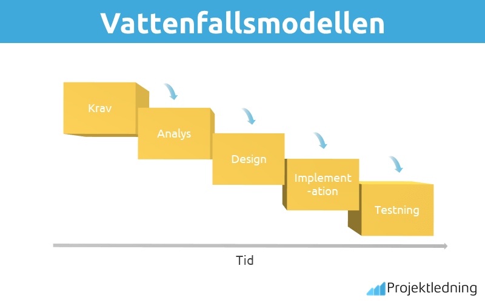

Under denna rubrik kommer ni kunna ta del utav två vanliga projektmetodiker samt ta del utav ramverket scrum
projektmetodik är kan ses som ett system med flertalet metoder, förfaranden, tekniker och regler som används vid arbeten inom olika discipliner.
De mest använda metoderna har tagits fram genom år utav erfarenhet men med grunder som gemene man kan lära sig snabbt men med utrymme för utveckling.
Denna modell är en utav de äldsta och även vanligaste modellen som används som projektledning. Metoden härstammar ifrån bygg- och tillverkningsindustrin med fokus på att sekventiellt utföra ett projekts olika faser. Beroende på vilken slags projektledning som finns tillgänglig och vilket arbetssätt som föredras kan man gynnas utav denna metod.
Metoden är uppbyggd i 5 steg som kan variera: Modellen är traditionell och är en enkelriktad utvecklingsprocess. Innebörden utav detta är att man har en plan för hur projektet skall genomföras och följer endast den riktningen. Så snart en fas är avklarad så går man inte tillbaka utan påbörjar nästa och försöker där lösa problemet istället för att gå tillbaka.
Fördelar med vattenfallsmodellen är att problem kan vara snabbupptäckta redan i första fasen och åtgärdas eller förutsägas senare under arbetets gång. Vid rätt hantering så vet man vilka resurser som behöver tillsättas samt ifall projektet kan påbörjas. Ytterligare så jobbar men enbart i en riktning stegvis vilket ger en tydlighet för alla inblandade i projektet. Upptäcker man hinder så läser man dessa innan man går vidare.
Nackdelar med metoden är att ifall problem som man inte tidigare kunnat förutspå uppkommer kan det vara mycket svårare att åtgärda. Ifall dessutom man märker att något inte blivit rätt i tidigare faser kan man inte längre åtgärda dessa då de är låsta och avslutade.
Den agila utvecklingsmetoden tar hänsyn till att förändringar kan tillkomma under en lång utvecklingsprocess. Arbetssättet bygger på att man innan inte vet exakt hur en mjukvara skall utvecklas. Detta är något som uppmärksammas under projektets gång när ny och aktuell kunskap tillkommer. Anpassningar ger möjligheter till ett mer lyckosamt resultat.
Arbetssättet kom till ytan 2001, då det också myntades 4 grundpelare:
Individer och interaktioner framför processer och verktygKort så står agilt för värderingar och olika attityder som ger ett underlättat, flexibelt och mer lättrörligt sätt att arbeta. När kund och leverantör ger varandra feedback och justeringar utifrån verkliga förutsättningar kan man nå ett resultat där båda är nöjda
Arbetet levererar produkten i bitar under faser vilket ger en möjlighet att snabbt få en överblick ifall man behöver korrigera vid missförstånd eller fel. Tillvägagångsättet kräver disciplin, en tät kommunikation och transparens mellan kunden och leverantören utav produkten.
Resultatet är en samarbetsform som skapar en gemensam framgång.En produktägare kommer med förändringar som en produkt skall genomgå inför uppdateringar eller nya funktioner. Detta är olika önskemål och krav som sammanställts för att förändra produkten, kan vara allt ifrån tex. buggar eller nya funktioner. För att nå målen delas uppdraget om förändringar ner i mindre delar som sedan prioriteras utav produktägaren och vad som skall göras i vilken ordning bestäms. Resultatet är en ”att göra lista” som ständigt förändras utifrån kundens behov. När det är dags för en ny sprint fryser produktägaren de viktigaste punkterna och kallar till möte med scrum-teamet. Scrum-teamet har sedan 30 kalenderdagar på sig att utföra uppgiften som tilldelats. Den första dagen består av att skapa en ”sprint backlog” där uppgifterna och tidsåtgången bestäms. Varje dag samlas teamet för att gå igenom hur arbetet förflyter för att förhindra hinder som kan uppstå eller som har uppstått. Detta med tre frågor för att få insyn i hur arbetet fortlöper och ifall hinder kan undvikas.
Vad har du gjort sedan förra mötet?
Vad tänker du göra inför kommande möte?
Är det något som hindrar dig från att uträtta ditt planerade arbete?
SCRUM ger möjlighet att snabbt ge respons på vad marknaden har för behov eller önskemål med en reducerad mängd väntetid och tidseffektivare arbete. Arbetssättet skall även minska på personalens stress och öka produktiviteten. Man kan samla ett stort antal utvecklare och bryta ner dem i grupper som kan utföra olika delar utav ett projekt, ett så kallat ”Scrum of scrums”. Eftersom produktägaren hela tiden bestämmer vad som skall utföras så det blir ett gemensamt ansvar för gruppen att utföra uppgiften och detta leder till ökad motivation samt att regler och rutiner bestäms och följs. Ifall man inte hinner klart flyttas arbetet tillbaka till backlog för att senare byggas på och ifall man istället skulle bli klar finns viss chans att man fortsätter med andra uppgifter produktägaren har.